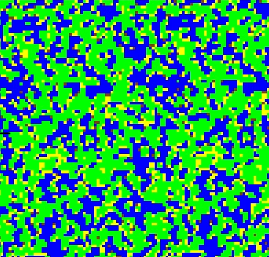

Projects

My portfolio, written in
For this project, I taught myself useful

(Hover over to expand)
Experimenting with
For this project, I became familiar with the idea of using noise for
My
For this project, I explored ideas around programming languages and how they are implemented, such as how they are represented using